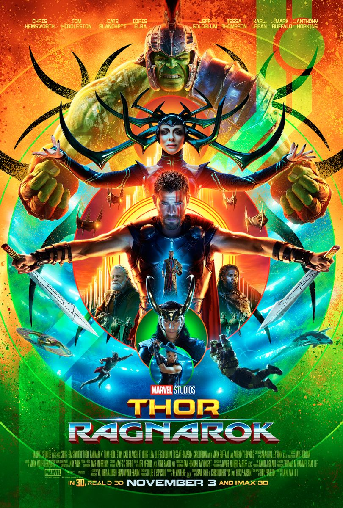

Bingewatch is a website where you can find
the details about the 10 best movies/series
and cartoons of 2022 so let's start with our
first best movie/series
Ratings 7.5/10 😎
The series follows Steven Grant, a mild- mannered
gift-shop employee, who becomes plagued with blackouts
and memories of another life. Steven discovers he
has dissociative identity disorder and shares a body
with mercenary Marc Spector. As Steven/Marc’s enemies converge upon them,
they must navigate their complex identities while thrust
into a deadly mystery among the powerful gods of Egypt.
Ratings 8.4/10 😎
After the devastating events of Avengers: Infinity War (2018), the universe
is in ruins. With the help of remaining allies, the
Avengers assemble once more in order to undo Thanos’ actions and restore order to the universe.
The grave course of events set in motion by Thanos
that wiped out half the universe and fractured
the Avengers ranks compels the remaining Avengers to take one final stand
in Marvel Studios’ grand conclusion to twenty-two films, Avengers: Endgame.
Avengers: Endgame is a 2019 American superhero film based on the
Marvel Comics superhero team the Avengers, produced by Marvel Studios and
distributed by Walt Disney Studios Motion Pictures
Ratings: 7.3/10 😎

Tony Stark creates the Ultron Program to protect the world,
but when the peacekeeping program becomes hostile, The Avengers
go into action to try and defeat a virtually impossible enemy together. Earth’s mightiest heroes must come together once again to protect the world from global extinction.
When Tony Stark and Bruce Banner trying to jump-start a dormant peacekeeping program called Ultron, things go horribly wrong and it’s up to Earth’s mightiest heroes to stop the villainous Ultron from enacting his terrible plan.
Ratings: 8.4/10 😎
The mad titan Thanos has begun his quest to obtain all six Infinity Stones, which will give him the power to wipe out half of all life in the universe. Earth’s mightiest heroes, now with help from the Guardians Of The Galaxy, will be tested like never before in their efforts to fight against their most powerful threat to date. The Avengers and their allies must be willing to sacrifice all in an attempt to defeat the powerful Thanos before his blitz of devastation and ruin puts an end to the universe.
Ratings: 8.0/10 😎

Nick Fury is the director of S.H.I.E.L.D., an international peace-keeping agency. The agency is a who’s who of Marvel Super Heroes, with Iron Man, The Incredible Hulk, Thor, Captain America, Hawkeye, and Black Widow. When global security is threatened by Loki and his cohorts, Nick Fury and his team will need all their powers to save the world from disaster which is formed by Loki and his team. Earth’s mightiest heroes must come together and learn to fight as a team if they are going to stop the mischievous Loki and his alien army from enslaving humanity.
Ratings: 8.4/10 😎
With Spider-Man’s identity now revealed, Peter asks Doctor Strange for help. When a spell goes wrong, dangerous foes from other worlds start to appear, forcing Peter to discover what it truly means to be Spider-Man.
Ratings: 7.4/10 😎
Following the events of Avengers: Endgame, Spider-Man must step up to take on new threats in a world that has changed forever. This is the latest Marvel Movie and also Spiderman Series.
Ratings: 7.4/10 😎
Peter Parker is exploring the concept of becoming an Avenger. Tony Stark tries to help Peter, but he does not have total faith in Spider-Man to become a hero. And so Peter Parker, aka Spider-Man sets off to prove he is worthy to become an Avenger while at the same time trying to manage his ordinary teenage life. Peter Parker balances his life as an ordinary high school student in Queens with his superhero alter-ego Spider-Man and finds himself on the trail of a new menace prowling the skies of New York City.
Ratings: 7.4/10 😎
Shang-Chi, the master of unarmed weaponry-based Kung Fu, is forced to confront his past after being drawn into the Ten Rings organization.
Ratings: 7.9/10 😎
Imprisoned on the other side of the universe, the mighty Thor finds himself in a deadly gladiatorial contest that pits him against the Hulk, his former ally, and fellow Avenger. Thor’s quest for survival leads him in a race against time to prevent the all-powerful Hela from destroying his homeworld and the Asgardian civilization. Thor is imprisoned on the other side of the universe and finds himself in a race against time to get back to Asgard to stop Ragnarok, the destruction of his homeworld and the end of Asgardian civilization, at the hands of an all-powerful new threat, the ruthless Hela.